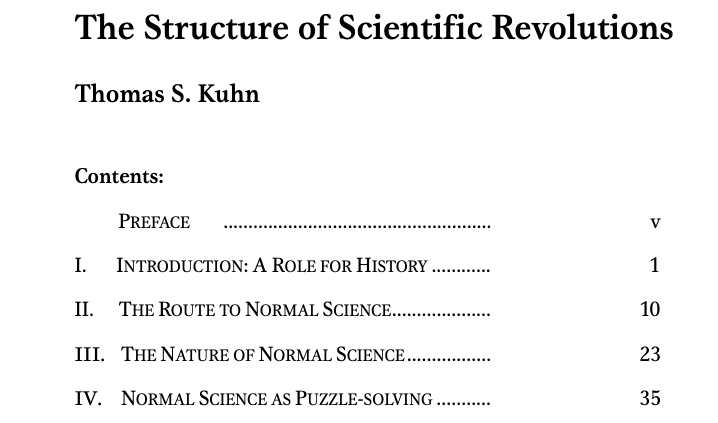
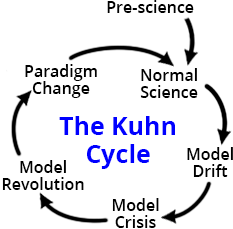

Lecture 13: CHIP: Philosophy of Science
A Paradigm Shift!
Dr. Gordon Wright ![]()
Mon 27 Jan, 2025
Is Psychology a Science?
The Ongoing Debate
- Positivism in Psychology: Traditional view supporting quantitative methods, treating human behavior as stable, measurable facts.
- Qualitative Shift: A focus on dynamic, ever-changing aspects of human behavior, challenging the idea of fixed patterns, and possibly facts!
- Source: @parker2011
The Role of Qualitative Research
- Qualitative vs. Quantitative: The debate isn’t about the validity of quantification but the quality of its application in psychology.
- Where is Psychology’s non-stick frying pan? [@banyard2015]
- Advancing Scientific Debate: Qualitative research is at the forefront of discussions about the nature of scientific inquiry in psychology.
- Source: [@parker2004]
The Structure of Scientific Revolutions
Paradigm Shifts
Thomas Kuhn’s Theory: Science progresses through paradigm shifts rather than linear accumulation of knowledge.
Application in Psychology: Shifts from behaviorism to cognitive psychology, and then to more integrated approaches.

Implications for Psychological Research
- Changing Research Methods: Embracing diverse methodologies reflecting evolving paradigms in psychology.
- Interdisciplinary Influence: Incorporating insights from philosophy, sociology, and neuroscience into psychological research.
Psychology as a ‘Soft Science’
- Psychology compared to pre-scientific stages of sciences
- The debate over applying ‘the scientific method’ in psychology
- The importance of being phenomenon-centered and problem-centered
- Misalignment of methods with research questions
@uher2021
Conclusion?
Psychology and Science
- Dynamic and Evolving: Psychology, like other sciences, undergoes paradigm shifts and methodological evolution.
- Beyond Traditional Boundaries: The discipline is increasingly recognizing the value of qualitative, subjective, and diverse approaches to understanding the human mind and behavior.
Karl Popper and Falsification
The Principle of Falsification
- Karl Popper’s Contribution: Emphasized the importance of falsifiability in scientific theories.
- Falsification vs. Verification: Popper argued that scientific theories can never be completely verified, but they can be falsified.
- Impact on Psychology: Encourages rigorous testing of hypotheses and openness to disconfirming evidence in psychological research.
Critiques and Legacy
- Practical Challenges: Difficulties in applying falsification principle in complex fields like psychology.
- Enduring Influence: Popper’s ideas continue to influence scientific methodology and philosophical discussions in psychology.
Epistemology
Epistemology
- Definition: The study of knowledge – its nature, origin, and limits.
- Relevance to Psychology: Helps in understanding how we acquire knowledge about human behavior and mental processes.
- How do we know what we know, or get to know something new?
Understanding the Ideographic/Nomothetic Divide
Ideographic Approach
- Focus: Emphasizes the unique aspects of individual cases or phenomena.
- Methodology: Often uses qualitative methods, such as case studies, to explore complex, subjective experiences.
- Goal: To understand the depth and complexity of individual experiences.
Nomothetic Approach
- Focus: Seeks to identify general laws and patterns that apply across multiple cases.
- Methodology: Employs quantitative methods, like experiments and surveys, to gather data on larger populations.
- Goal: To formulate generalizations and broad theories applicable to many.
Implications in Psychological Research
Balancing Perspectives
- Integrating Approaches: Both ideographic and nomothetic methods offer valuable insights; combining them can lead to a more holistic understanding of psychological phenomena.
- Challenges in Quantitative Research: The need to acknowledge and address the reflexive capacity of human beings and the meaningful nature of data from aggregated descriptions of behavior.
- Innovative Research Possibilities: Opportunities for innovative research that addresses these challenges, respecting the particularities of individual cases within broader patterns.
- [@robinson2012a]
Why should we care about this question?
The Esteem of Science
- Science’s high regard in society and academia
- The assumption that the scientific method leads to reliable results
- The challenge in defining ‘scientific method’ and its transferability
Chalmers, 2014 What is this thing called Science?
Conclusion: Rethinking Scientific Method in Psychology
- Recognizing the influence of subjective experiences on observation
- Understanding the interplay between facts, theory, and conceptual frameworks
- The challenge of applying a rigid scientific method to human behavior and experiences
Abstract
- Psychology’s struggle with foundational concepts: mind and behavior
- Lack of unified theoretical framework
- Classification as a ‘soft science’
- Need for diverse methodologies and systematic integration
- Galtonian nomothetic methodology’s limitations
[Uher, 2020]
Lack of Proper Terms and Definitions
- Discordant and ambiguous definitions in psychology
- Overlap between psychology, neuroscience, and philosophy
- Proliferation of terms and constructs
- Deeply fragmented theoretical landscape
[Uher, 2020]
Lack of Conceptual Integration
- Diversity of epistemologies, paradigms, and methodologies
- Absence of a unified theory in psychology
- Challenges with evolutionary psychology as an integrative framework
- Speculative nature of evolutionary explorations in psychology
[Uher, 2020]
Psychology as a ‘Soft Science’
- Psychology compared to pre-scientific stages of sciences
- The debate over applying ‘the scientific method’ in psychology
- The importance of being phenomenon-centered and problem-centered
- Misalignment of methods with research questions
[Uher, 2020]
Experience in Psychology
- The dual aspects of experience: objective content and subjective apprehension
- Contrast between natural sciences and psychological approaches
- Psychology’s focus on immediate subjective experience
- The role of agency, volition, value orientation, and teleology
[Uher, 2020]
Constructs in Science and Everyday Psychology
- Challenges posed by the transient nature of experience
- The interplay of constructs with everyday knowledge and language
- The entification of constructs and overlooking their constructed nature
- Differentiation between psychical and psychological phenomena
[Uher, 2020]
Psychology’s Exceptional Position
- Psychology at the intersection of sciences and philosophy
- Exploration of diverse phenomena across human life
- Requirement for a plurality of methodologies and epistemologies
- Psychology as a non-unitary science due to its wide-ranging study phenomena
[Uher, 2020]
Idiographic and Nomothetic Strategies
- The uniqueness of immediate experience
- The use of idiographic strategies for exploring individual cases
- Limitations of Galtonian nomothetic methodology
- The impact of natural-science principles on psychological research
[Uher, 2020]
Moving Beyond Conceptual Deadlock
- Introduction of the Transdisciplinary Philosophy-of-Science Paradigm (TPS-Paradigm)
- Aiming for critical reflection and development of new theories
- Integration of concepts from various disciplines
- Focus on the individual as the central unit of analysis
[Uher, 2020]
Philosophical Framework of the TPS-Paradigm
- Three sets of presuppositions about research on individuals
- Human limitations in perception and conceptualization
- Concept of individuals as complex, open, and nested systems
- Application of complementarity in methodology
[Uher, 2020]
Metatheoretical Framework
- Formalization of phenomena’s accessibility to human perception
- Differentiation of various kinds of phenomena related to individuals
- Integration and development of concepts across fields
- Exploration of psychical phenomena and their connections
[Uher, 2020]
Methodological Framework
- Concepts for matching methodology with phenomena
- Development of methods for comparing individuals
- Analysis of data generation and measurement practices
- Application of metrological principles in psychological research
[Uher, 2020]
References

Research Methods Lecture 13 - Philosophy of Science